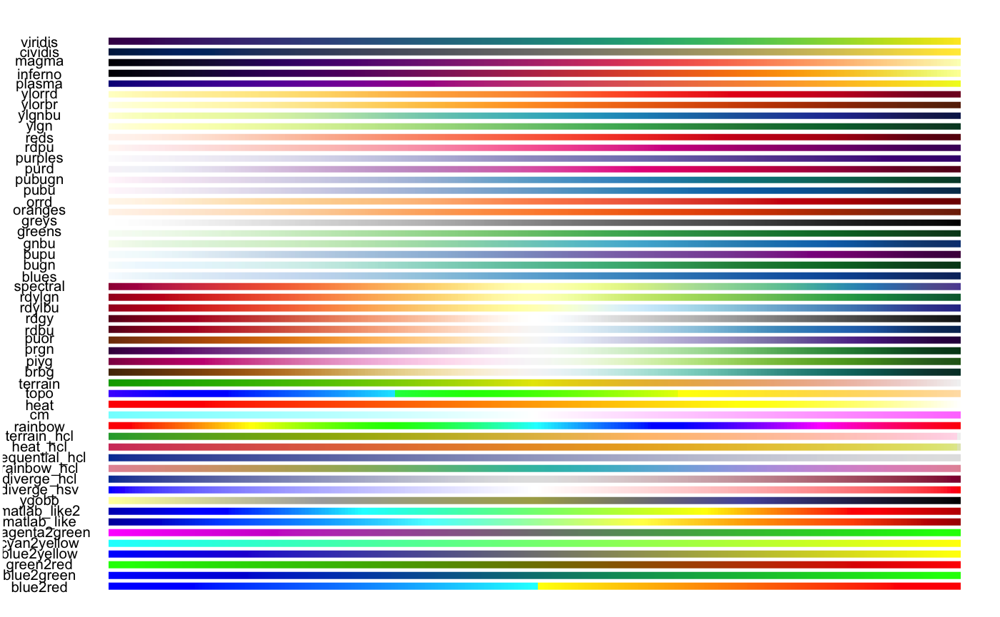

Colours
The easiest way to colour your data is to pass the column of your data you want coloured to either the stroke_colour or fill_colour argument (depending on the layer you’re using).
fill and stroke
For this demonstration I’m using a simple feature sf object of polygons denoting various regions in Melbourne (taken from the spatialwidget library)
## Linking to GEOS 3.7.2, GDAL 2.4.2, PROJ 5.2.0sf <- spatialwidget::widget_melbourne sf
## Simple feature collection with 41 features and 3 fields
## geometry type: POLYGON
## dimension: XY
## bbox: xmin: 144.8889 ymin: -37.89173 xmax: 145.0453 ymax: -37.7325
## CRS: EPSG:4326
## First 10 features:
## SA2_NAME SA3_NAME AREASQKM
## 1 Abbotsford Yarra 1.7405
## 2 Albert Park Port Phillip 4.6747
## 3 Alphington - Fairfield Darebin - South 2.8853
## 4 Armadale Stonnington - West 2.1835
## 5 Ascot Vale Essendon 3.8361
## 6 Brunswick Brunswick - Coburg 5.1425
## 7 Brunswick East Brunswick - Coburg 2.1680
## 8 Brunswick West Brunswick - Coburg 3.1795
## 9 Carlton Melbourne City 1.8185
## 10 Carlton North - Princes Hill Yarra 2.3042
## geometry
## 1 POLYGON ((144.9925 -37.8024...
## 2 POLYGON ((144.9449 -37.8437...
## 3 POLYGON ((145.0204 -37.7654...
## 4 POLYGON ((145.0117 -37.8535...
## 5 POLYGON ((144.8994 -37.7704...
## 6 POLYGON ((144.9497 -37.7627...
## 7 POLYGON ((144.9734 -37.7620...
## 8 POLYGON ((144.9341 -37.7596...
## 9 POLYGON ((144.9643 -37.7984...
## 10 POLYGON ((144.9594 -37.7847...This first map is simply showing the regions coloured according to its name
mapdeck() %>% add_polygon( data = sf , fill_colour = "SA2_NAME" )

fill viridis
The colour scheme defaults to viridis. You can change it with the palette argument by using one of the other palettes available in library(colourvalues)
## to see a list of colours ## colourvalues::colour_palettes() ## plot of colours colourvalues::show_colours()

or by using a matrix palette.
## using another viridis colour palette mapdeck() %>% add_polygon( data = sf , fill_colour = "SA2_NAME" , palette = "inferno" )

fill inferno
m <- grDevices::colorRamp(c("blue", "white", "yellow"))( (1:256)/256 ) mapdeck() %>% add_polygon( data = sf , fill_colour = "SA2_NAME" , palette = m )

fill manual
Opacity
You can change the transparency of the colours by specifying a numeric column of data to either fill_opacity or stroke_opacity
mapdeck() %>% add_polygon( data = sf , fill_colour = "SA2_NAME" , fill_opacity = "AREASQKM" )

fill opacity
Or by using a single value between 1 & 255 to apply to all the shapes
mapdeck() %>% add_polygon( data = sf , fill_colour = "SA2_NAME" , fill_opacity = ( 255 / 2 ) )

fill opacity value
How it works
The colouring is performed by the colourvalues library. Feel free to browse the documentation and code if you want a deeper understanding.
But broadly speaking, when you supply a vector to colour_values(), it returns a vector of colours scaled according to the data
colourvalues::colour_values(1:10)
## [1] "#440154FF" "#482878FF" "#3E4A89FF" "#31688EFF" "#26838EFF" "#1F9D89FF"
## [7] "#35B779FF" "#6CCE59FF" "#B4DD2CFF" "#FDE725FF"Here you should see the values 1:10 get coloured according to the palette you supply (the default is “viridis”). The colours are also automatically ordered against your data. So if we reverse the vector
colourvalues::colour_values(10:1)
## [1] "#FDE725FF" "#B4DD2CFF" "#6CCE59FF" "#35B779FF" "#1F9D89FF" "#26838EFF"
## [7] "#31688EFF" "#3E4A89FF" "#482878FF" "#440154FF"You can see the colour assigned to 1 is the same in both cases.
The same is true when using different palettes
colourvalues::colour_values(c(1:10,10:1), palette = "inferno")
## [1] "#000004FF" "#1B0C41FF" "#4B0C6BFF" "#781C6DFF" "#A52D60FF" "#CF4446FF"
## [7] "#ED6925FF" "#FB9A06FF" "#F7D13CFF" "#FCFFA4FF" "#FCFFA4FF" "#F7D13CFF"
## [13] "#FB9A06FF" "#ED6925FF" "#CF4446FF" "#A52D60FF" "#781C6DFF" "#4B0C6BFF"
## [19] "#1B0C41FF" "#000004FF"m <- grDevices::colorRamp(c("blue", "white", "yellow"))( (1:256)/256 ) colourvalues::colour_values(c(1:10,10:1), palette = m)
## [1] "#0202FFFF" "#3A3AFFFF" "#7373FFFF" "#ABABFFFF" "#E4E4FFFF" "#FFFFE2FF"
## [7] "#FFFFA9FF" "#FFFF71FF" "#FFFF38FF" "#FFFF00FF" "#FFFF00FF" "#FFFF38FF"
## [13] "#FFFF71FF" "#FFFFA9FF" "#FFFFE2FF" "#E4E4FFFF" "#ABABFFFF" "#7373FFFF"
## [19] "#3A3AFFFF" "#0202FFFF"See how the colours are mirrored to reflect the data.
The same ordering applies to characters, factors, dates, etc. In this example I’m colouring the letters “j” through to “a” (in the English alphabet). The colour assigned to “a” is the same as that applied to 1.
colourvalues::colour_values(letters[10:1])
## [1] "#FDE725FF" "#B4DD2CFF" "#6CCE59FF" "#35B779FF" "#1F9D89FF" "#26838EFF"
## [7] "#31688EFF" "#3E4A89FF" "#482878FF" "#440154FF"Vectors vs scalar
There is a difference in behaviour when you supply a vector for the opacity compared to when you use a single value.
See how these two lines produce different results
colourvalues::colour_values(x = rep(1,5), alpha = rep(255,5))
## [1] "#44015400" "#44015400" "#44015400" "#44015400" "#44015400"colourvalues::colour_values(x = rep(1,5), alpha = 255)
## [1] "#440154FF" "#440154FF" "#440154FF" "#440154FF" "#440154FF"This is because one uses a vector, where all the values are 255, and the other uses a single value of 255.
Lke with colours, when you supply a vector for the opacity, colourvalues treats each element relative to the other elements and maps the opacity accordingly.
It does this by rescaling the values in the vector to be in [0,1] (source code is here if you want to look), then multiplies by 255.
The [0,255] values are then the actual opacities.
So in this example, since every value of the vector is the same, they all get scaled to zero, which is the most transparent opacity.
Here are the result in action.
library(sf) library(spatialwidget) sf <- spatialwidget::widget_melbourne sf$opacity <- 150 mapdeck() %>% add_polygon( data = sf , fill_colour = "SA2_NAME" , fill_opacity = "opacity" )

The polygons are completely tranparent. Now if I use a single value of 150, rather than a vector, we get the desired opacity.
library(sf) library(spatialwidget) sf <- spatialwidget::widget_melbourne sf$opacity <- 150 mapdeck() %>% add_polygon( data = sf , fill_colour = "SA2_NAME" , fill_opacity = 150 , stroke_colour = "SA2_NAME" )

Manual colours
If you want finer control over the colours, you can add a column of colours to your data, specified as a hex string.
Here I’m setting all the polygons which begin with A as green, and the rest as red
sf$my_colour <- ifelse( substr(sf$SA2_NAME, 1, 1) == "A", "#00FF00FF", "#FF0000FF") mapdeck( ) %>% add_polygon( data = sf , fill_colour = "my_colour" )

fill manual
Setting legend = TRUE in this example will just show the legend with the hex-strings, which probably isn’t what you’re after. In this case you can also create a manual legend, which I’ve described over on the legends article
colour_range
Some layers use a colour_range argument instead of fill and stroke. For these layers you need to use a vector of 6 hex strings. These also default to the viridis palette.
sf_outer <- sf::st_convex_hull( sf::st_union( sf ) ) sf_sample <- sf::st_sample( sf_outer, size = 10000 ) sf_sample <- sf::st_sf( geometry = sf_sample ) mapdeck() %>% add_hexagon( data = sf_sample , colour_range = colourvalues::colour_values(1:6, palette = "plasma") , elevation_scale = 10 )

colour range
GeoJSON
Colouring geojson is a bit different to other layers.
If your geojson has a properties field, and within that field you have one of
-
fill_colour/stroke_colour -
fillColour/strokeColour -
fill_color/stroke_color -
fillColor/strokeColor
these will be automatically used and plotted
## [1] "{\"type\":\"FeatureCollection\",\"features\":[{\"type\":\"Feature\",\"properties\":{\"id\":1.0,\"fillColor\":\"#21908CFF\",\"line_colour\":\"#F89441FF\",\"random\":-0.6576371210491236},\"geometry\":{\"type\":\"LineString\",\"coordi"
## attr(,"class")
## [1] "geojson" "json"mapdeck( location = c(145, -37.8), zoom = 10) %>% add_geojson( data = mapdeck::geojson )

geojson
This is the quickest way of getting your data from R to javascript
If your GeoJSON doesn’t contain those colour fields, or if you want to use a different property for colours, you can do so, but it will be a bit slower as it has to convert the geojson to an sf object first, sort out the colours, then back to GeoJSON
mapdeck( location = c(145, -37.8), zoom = 10) %>% add_geojson( data = mapdeck::geojson , fill_colour = "id" , radius = 300 )

geojson colour